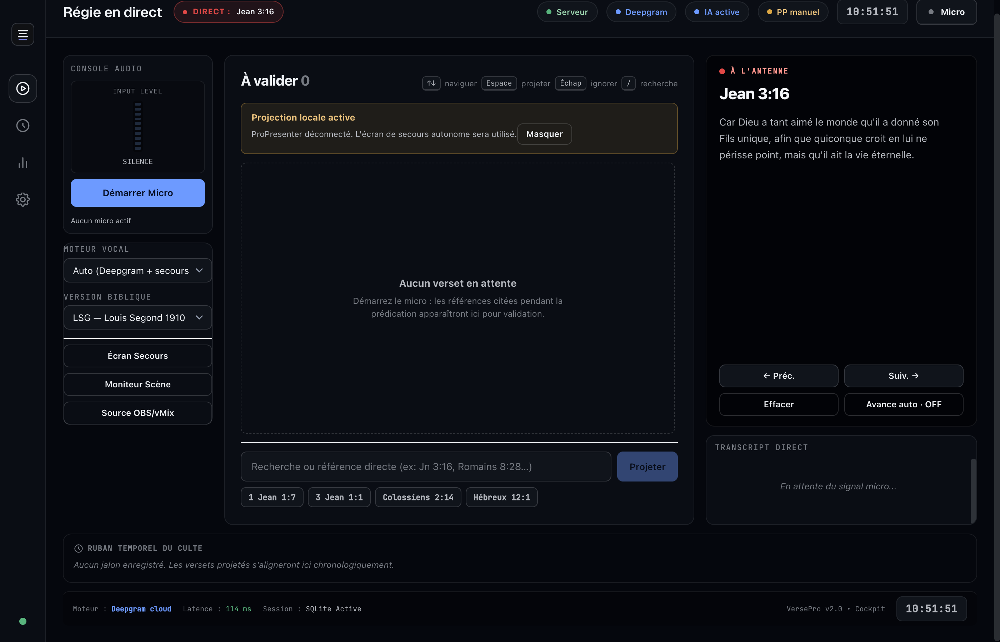

écouter
Transcription cloud ou locale hors connexion. L’entrée audio reste visible et contrôlable.
projection biblique en temps réel
VersePro écoute la prédication et prépare les passages. Vous validez, l’assemblée lit. Le mode local fonctionne sans Internet après préparation.
« Écris la vision, grave-la sur des tables, afin qu’on la lise couramment. » — Habacuc 2:2

01 · à l’antenne
La voix entre, la transcription avance et le texte sort dans un habillage prêt pour l’écran, OBS ou vMix.
Le passage s’affichera après votre validation.
ÉCRAN DE DÉMONSTRATION« Ouvrons Jean, chapitre trois, verset seize. »
02 · pensé pour le dimanche
Transcription cloud ou locale hors connexion. L’entrée audio reste visible et contrôlable.
Les références explicites et les rapprochements sémantiques arrivent avec un niveau de confiance lisible.
Le mode sûr garde une personne entre la détection et l’écran public. L’autopilote reste un choix.
Écran autonome, lower third, OBS, vMix, ProPresenter et retour scène partagent la même source.
03 · disponible gratuitement
Choisissez la version de votre ordinateur : Windows x64 ou Mac avec puce Apple. Les Mac Intel ne sont pas pris en charge par ce DMG.
détection de votre système…
Si macOS affiche un message de sécurité lors de la première ouverture :
VersePro.app dans le dossier Applications, puis cliquez sur Ouvrir et validez Ouvrir quand même.xattr -cr /Applications/VersePro.app
Windows peut afficher « Windows a protégé votre ordinateur ». L'installateur n'est pas encore signé — c'est ce que financent les dons.
macOS 12 ou plus récent (puce Apple Silicon) · Windows 10/11 64 bits · 4 Go de RAM libres · espace supplémentaire pour les modèles locaux (environ 716 Mo pour la voix et 265 Mo pour la recherche, hors installation et fichiers temporaires). Le moteur local charge ses index au démarrage : comptez une vingtaine de secondes au premier lancement.
Équipes média francophones : testez VersePro sur votre matériel et partagez ce qui vous a aidés ou bloqués.
04 · garder VersePro libre
Les dons financent les tests terrain, les signatures d’installateurs et le développement continu de nos logiciels chrétiens. Ils ne débloquent aucune fonction.
💛 Faire un don libre (Mobile Money & Carte)